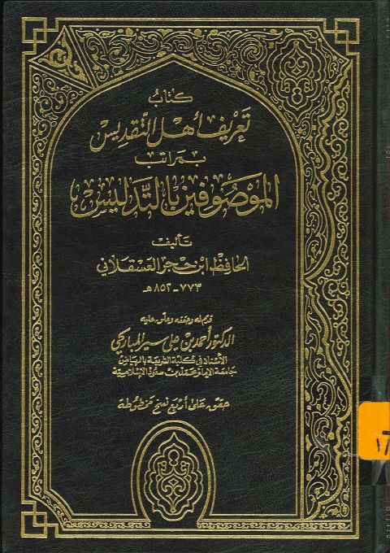
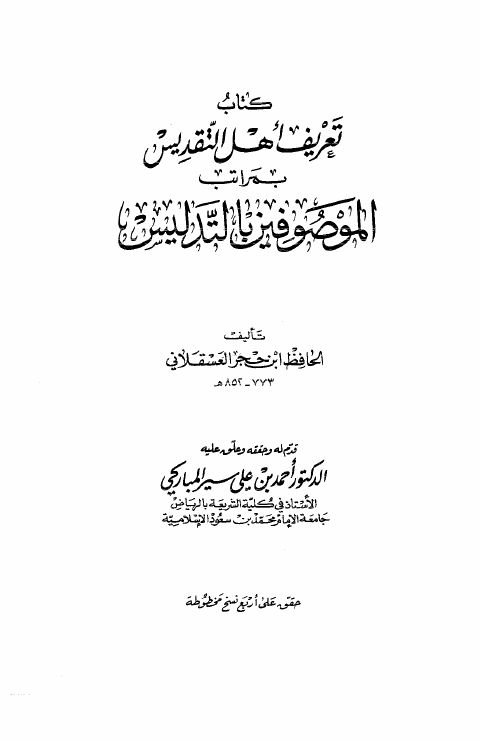

أحمد بن علي سير المباركي
Author
Resources

تعريف أهل التقديس بمراتب الموصوفين بالتدليس تعريف أهل التقديس بمراتب الموصوفين بالتدليس أحمد بن محمد بن علي بن حجر العسقلاني
كتاب تعريف أهل التقديس بمراتب الموصوفين بالتدليس كتاب تعريف أهل التقديس بمراتب الموصوفين بالتدليس أحمد بن علي بن حجر العسقلاني كتاب تعريف أهل التقديس بمراتب الموصوفين بالتدليس
كتاب تعريف أهل التقديس بمراتب الموصوفين بالتدليس
أحمد بن علي بن حجر العسقلاني
كتاب تعريف أهل التقديس بمراتب الموصوفين بالتدليس
كتاب تعريف أهل التقديس بمراتب الموصوفين بالتدليس
أحمد بن علي بن حجر العسقلاني